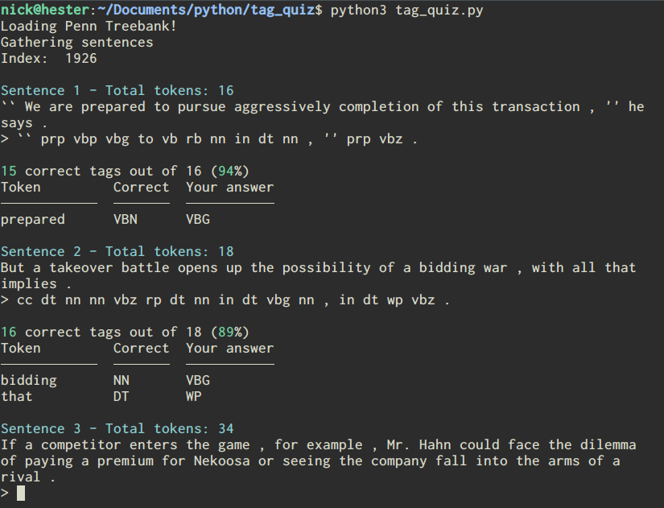
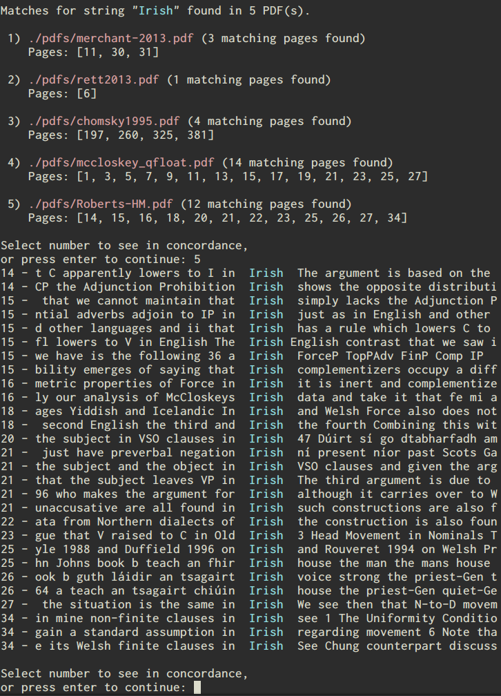

Some recent projects
This is just a short post about two recent projects I've been working on: A script for practicing corpus tagging, and a program for searching pdf files.
Tag quiz
I wanted to brush up a bit on my knowledge of the Penn tag set because it's been a few years since I last had to use it in any way. I figured there would be some sort of application on the internet that would allow somebody to practice tagging with this particular tag set (since it is well known) and test how accurately they tagged material with it. I was really surprised that I could find no such pre-existing application on the web. Fortunately, with access to the subset of the Penn Treebank provided by the nltk, it was fairly easy to code up my own solution in an evening.
The script takes sentences from the Penn Treebank corpus included with the nltk and asks the user to provide tags for each token in the sentence. The script then compares the user's tags to those already in the corpus and tells the user how well they did. At the end, it give the user their overall accuracy and tells the user if there are particular tags that they are getting wrong frequently.
Right now, the code is set up specifically to extract tags from the parsed trees in the nltk's subset of the Penn Treebank corpus, but in principle this can be easily adapted to work with any corpus with any tag set. In the future I plan to set this up so it can work with other corpora and, therefore, other tag sets.
You can get the script here.
PDFdex
Another project that I have been working on is a program that extracts text from pdf files to allow a user to quickly search through several pdf files at once. I got the idea a while back when I was trying to remember where I had read something in one of several (long) pdf files I have but couldn't remember which one I read it in. I thought to myself, ‘it would sure be nice if I could search all of these files at once’, and then instead of just downloading EvernoteEvernote is actually one of those pieces of software that isn't available for Linux, at least not with an official client. I've written a little about this issue. like a regular person, I decided it was time to learn how to extract text from pdf files in Python.
The result is what I have been calling PDFdex (which is not a good name admittedly, but I never claimed to be good at naming things). It is still in what we might call an alpha stage, in that I've been focusing on implementing the features that I want in it rather than user-friendliness (or making it so that it won't crash if you tell it to do the wrong thing). Right now, it loads the text from individual pdf files into a database, and allows the user to search the full text of each pdf in that database. The search returns the page numbers containing the search string (if any) and allow the user to concordance the results so they can see some context for that result before they even open the pdf file itself:
Beyond this, the program attempts to identify potential keywords in the document and can also try to identify which other pdf files in the database are similar. These functionalities are both fairly primative right now. Keyword identification is currently just picking out high-frequency tokens that aren't stop words, and the document comparison functionality just calculates similarity based on the Jaccard index or by seeing if documents share a high number of keywords. I'm still learning about keyword identification and document comparison, but at least for the document comparison functionality I hope to drop in some ready-to-go functionality from a package like spaCy.
The code that's on GitHub right now, if anybody wants to look at it, is really more than a proof of concept than anything else. One issue with the current code is that I'm storing the database as a dictionary containing the full text of each pdf file. This has been convenient for some things; for instance, I can save the dictionary as a json file (which let me make some hand edits early on in a text editor), and dictionaries are generally quite fast. But using dictionaries for this task can get pretty tedious; each pdf file is stored as a dictionary in the larger dictionary, with different parts of its metadata (the path the to file, the text of individual pages, the keywords) stored as keys to that dictionary. This is sort of what I get for keeping around the orignal code I used from when I was first testing out ideas, but I plan on going back and recoding a lot of the core of this to do the thing that makes sense: Make each pdf file a Python object.